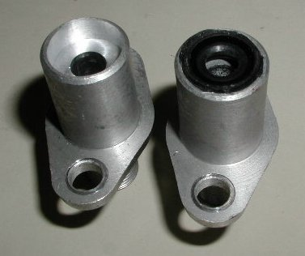
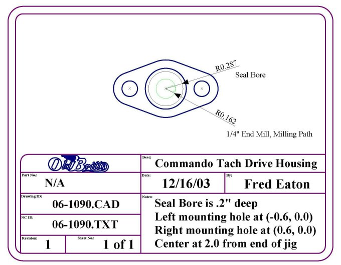

Modified Tachdrive Housing, With Oil Seal
10/12/09
We no longer perform this modification or stock the Honda seal since we have developed an electronic tachometer.
You can perform the modification yourself or get your local machine shop to do the modification.

This picture shows the modified tachometer drive housing
to accept the Honda seal (Honda part # 91207-222-000).
The housing on the left is without the seal and the one on the right shows the seal installed.

This picture is our CAD drawing for modifying the housing.
Return to Old Britts home page
….. Our Products, Ordering
Norton Parts
….. Engine, Crankcases, Tachometer Drive
This page was written and designed by F. H. Eaton
& Associates if you have any questions or comments please
contact us at info@fheaton.com